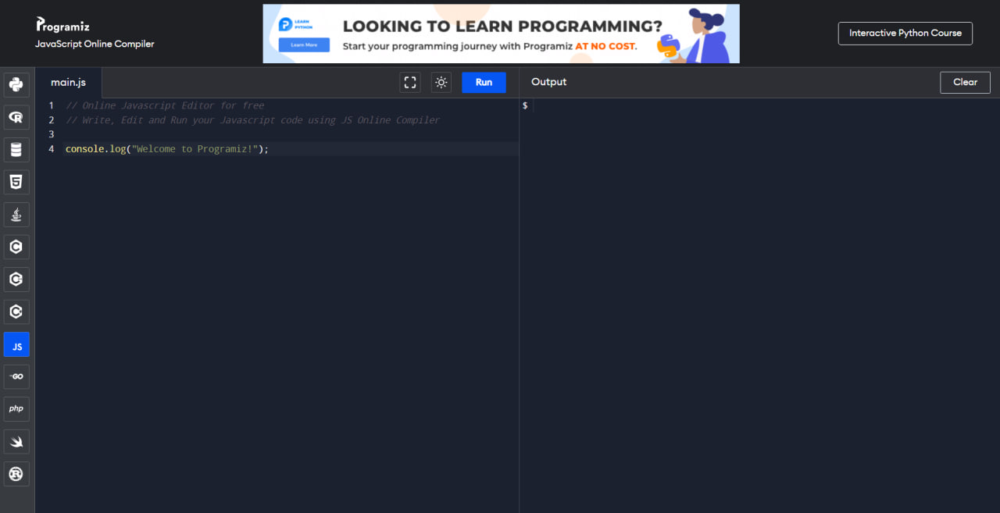

Online JS Compiler (Editor)
Зручний онлайн редактор для мови програмування JavaScript. Не треба нічого встановлювати, ефективно та швидко.
ПерейтиЗручний онлайн редактор для мови програмування JavaScript. Не треба нічого встановлювати, ефективно та швидко.
ПерейтиЛайтбокс, який працює в усіх сучасних браузерах із зображеннями, відео, фреймами та будь-яким типом HTML.
ПерейтиРозширення для браузера яке допомагає проглядати файли json в зрозумілому записі для людини.
ПерейтиКастомний курсор який надасть цікавий вигляд вашому веб-проєкту. Реалізовано на звичайному JS.
ПерейтиНе розумієте як працюють проміси? На даному сервісі можна прописати свої проміси та спостерігати їх виконання.
Перейти